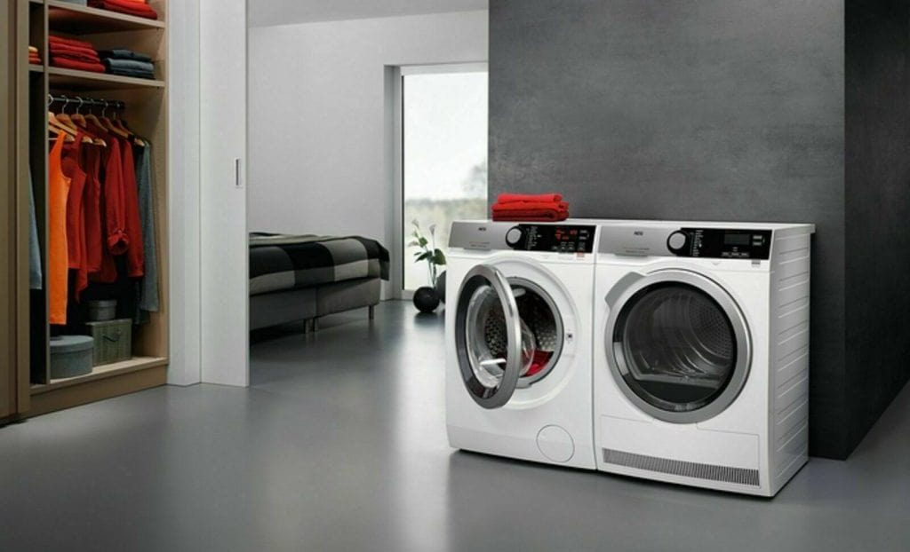
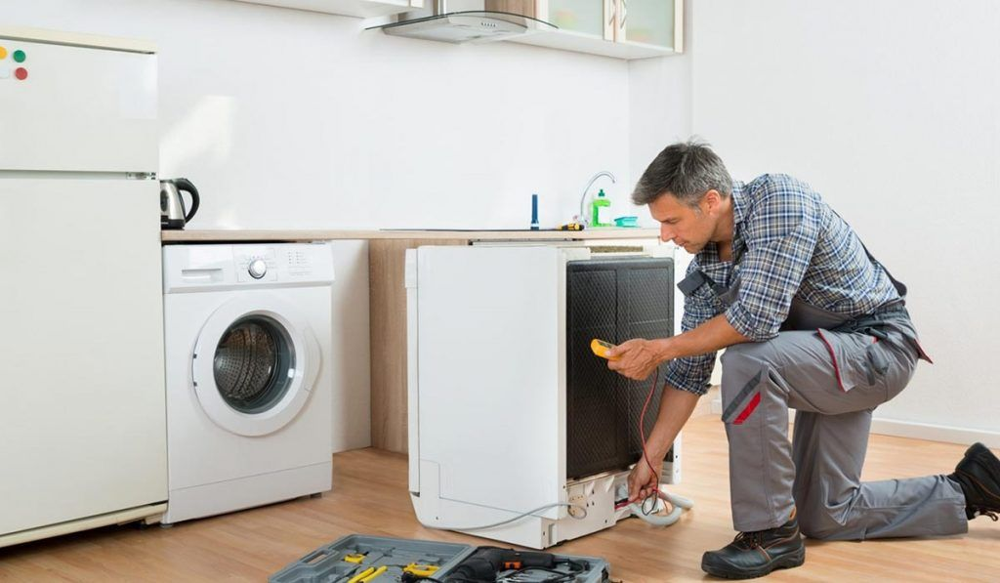
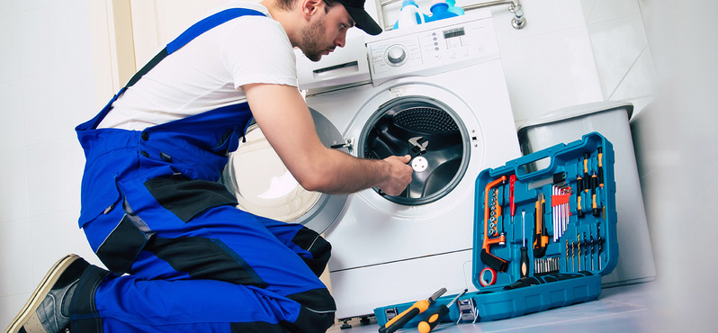
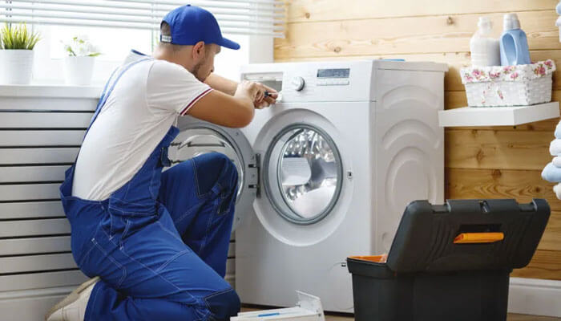
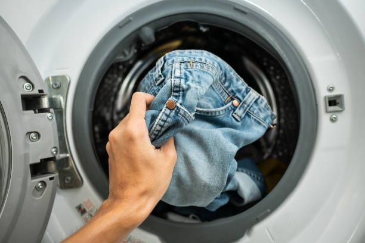

Konya Çamaşır Makinesi Teknik Servisi: Çamaşır Makinesi Nedir, Neden ve Nasıl Bakım Yapılır?
Günümüzde evlerin vazgeçilmez beyaz eşyalarından biri olan çamaşır makineleri, hayatımızı büyük ölçüde kolaylaştırıyor. Özellikle Konya gibi büyük şehirlerde, yoğun tempoda çalışan aileler için çamaşır makinesi zamandan ve enerjiden tasarruf etmenin en pratik yoludur. Peki çamaşır makinesi nedir, neden düzenli bakım yaptırmak gerekir ve çamaşır makinesi bakımı nasıl yapılır? Konya çamaşır makinesi teknik servis hizmetleriyle ilgili tüm detayları bu yazımızda bulabilirsiniz.
Çamaşır Makinesi Nedir? Ne İşe Yarar?
Çamaşır makinesi, kirli çamaşırları otomatik olarak yıkayan, durulayan ve sıkma işlemini gerçekleştiren bir beyaz eşyadır. Modern çamaşır makineleri farklı program seçenekleriyle her türlü kumaşa uygun yıkama imkanı sunar. Konya’da hem evlerde hem de işletmelerde yaygın olarak kullanılan çamaşır makineleri, hijyenin ve temizliğin en önemli yardımcılarından biridir. Zaman kazandırmasının yanı sıra, su ve deterjan tasarrufu da sağlar.
Neden Çamaşır Makinesi Bakımı Yaptırmalıyız?
- Daha Uzun Ömür: Düzenli bakım yapılan çamaşır makineleri, yıllarca sorunsuz çalışır. Parça arızalarının ve büyük sorunların önüne geçmek için bakım şarttır.
- Enerji ve Su Tasarrufu: Temiz ve bakımlı bir makine, daha az enerji ve su harcar. Böylece hem faturalarınız düşer hem de çevreye katkı sağlarsınız.
- Daha Temiz Çamaşırlar: Bakımı yapılmayan makinelerde deterjan kalıntıları ve kireç birikintileri çamaşırların tam olarak temizlenmemesine ve kötü kokulara neden olabilir.
- Hijyen ve Sağlık: Filtrelerde ve kazan içinde biriken kir, bakteri ve mantar oluşumuna yol açabilir. Bu da hem makinenizin hem de çamaşırlarınızın hijyenini olumsuz etkiler.
- Beklenmedik Arızaların Önlenmesi: Düzenli bakım, ani arızaların ve yüksek maliyetli tamirlerin önüne geçer. Özellikle elektronik kart, motor ve pompa gibi önemli parçaların ömrü uzar.
Çamaşır Makinesi Bakımı Nasıl Yapılır?
Çamaşır makinesi bakımı için uzman teknik servislerden destek almak en güvenli ve doğru yöntemdir. Ancak evde de dikkat edebileceğiniz bazı önemli bakım adımları vardır:
- Filtre Temizliği: Makinenizin alt kısmında bulunan filtreyi düzenli olarak çıkarıp temizleyin. Tıkanan filtreler suyun tahliyesini engeller ve makinenin arıza vermesine neden olabilir.
- Kazan ve Lastik Temizliği: Kapak lastiği ve kazan çevresinde biriken deterjan kalıntılarını ve kirleri nemli bir bezle silin. Küf ve kötü kokuların önüne geçmek için bu işlemi ihmal etmeyin.
- Deterjan Gözünün Temizliği: Deterjan ve yumuşatıcı bölmesini çıkarıp suyla yıkayın. Kalıntıların birikmesi, deterjanın tam çözülmemesine neden olur.
- Kireç Temizliği: Konya gibi suyun kireçli olduğu bölgelerde, ayda bir kez makine temizleyici veya doğal yöntemlerle (örneğin sirke ile) boş çalıştırarak kireç oluşumunu önleyin.
- Profesyonel Bakım: Yılda en az bir kez Konya çamaşır makinesi teknik servisinden genel bakım hizmeti alın. Elektrik bağlantıları, su giriş-çıkış hortumları, motor ve elektronik kart kontrolleri uzmanlar tarafından yapılmalıdır.
Çamaşır Makinesi Bakımı Ne Zaman Yapılmalı?
Çamaşır makinesi bakımı için en uygun zaman, yoğun kullanım öncesi ve sonrası yılda en az bir kezdir. Özellikle bayramlar, mevsim geçişleri veya uzun süreli kullanımlar öncesinde bakım yaptırmak, makinenizin performansını ve ömrünü artırır. Ayrıca, makinenizden kötü koku geliyorsa, çamaşırlar tam temizlenmiyorsa veya su tahliyesinde sorun yaşıyorsanız mutlaka teknik servise başvurmalısınız.
Konya Çamaşır Makinesi Teknik Servis ve Tamir Hizmeti
Konya’da çamaşır makinesi arızası, bakım veya temizlik ihtiyacınız mı var? Etka Teknik Servis olarak Selçuklu, Meram, Karatay ve çevresinde hızlı, güvenilir ve uygun fiyatlı çamaşır makinesi teknik servis ve tamir hizmeti sunuyoruz. Uzman ekibimizle, makinenizin tüm bakım ve onarım işlemlerini garantili olarak gerçekleştiriyoruz. Arıza tespiti, parça değişimi, elektronik kart tamiri, motor ve pompa onarımı gibi tüm işlemler için bize güvenebilirsiniz.
- Çamaşır makinesi genel bakım ve temizlik
- Motor, pompa ve elektronik kart arızası onarımı
- Su giriş-çıkış hortumu değişimi ve kontrolü
- Kapak lastiği ve conta değişimi
- Yerinde hızlı servis ve arıza tespiti
- Orijinal yedek parça temini ve montajı
Çamaşır makinesi bakımı ve tamiri için hemen bizi arayın, evinizde hijyen ve konforu sürdürün! Etka Teknik Servis, Konya’da çamaşır makinesi teknik servisinde güvenin adresidir.